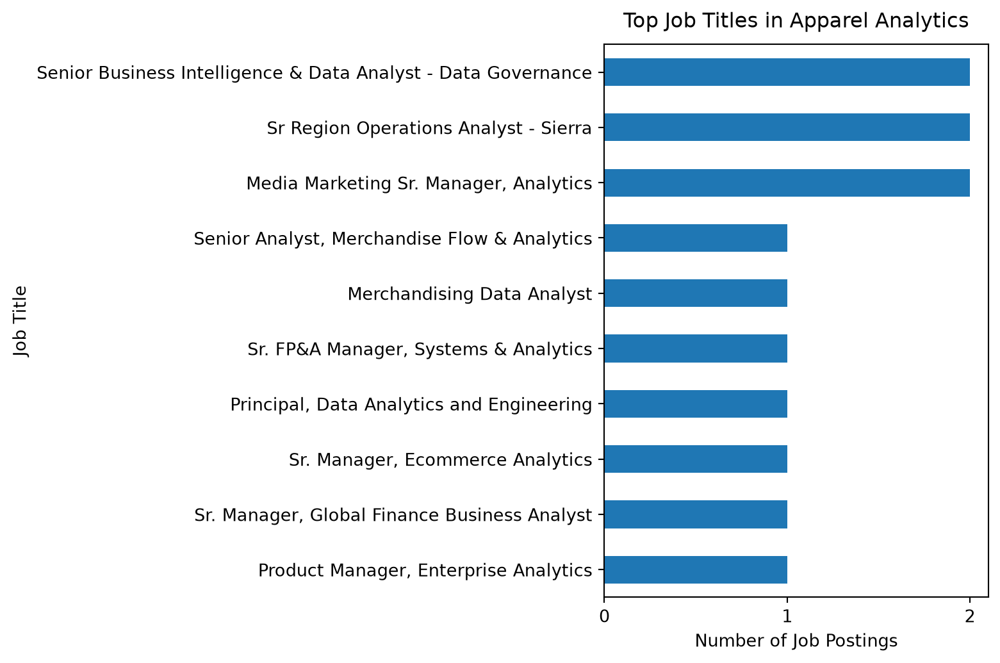
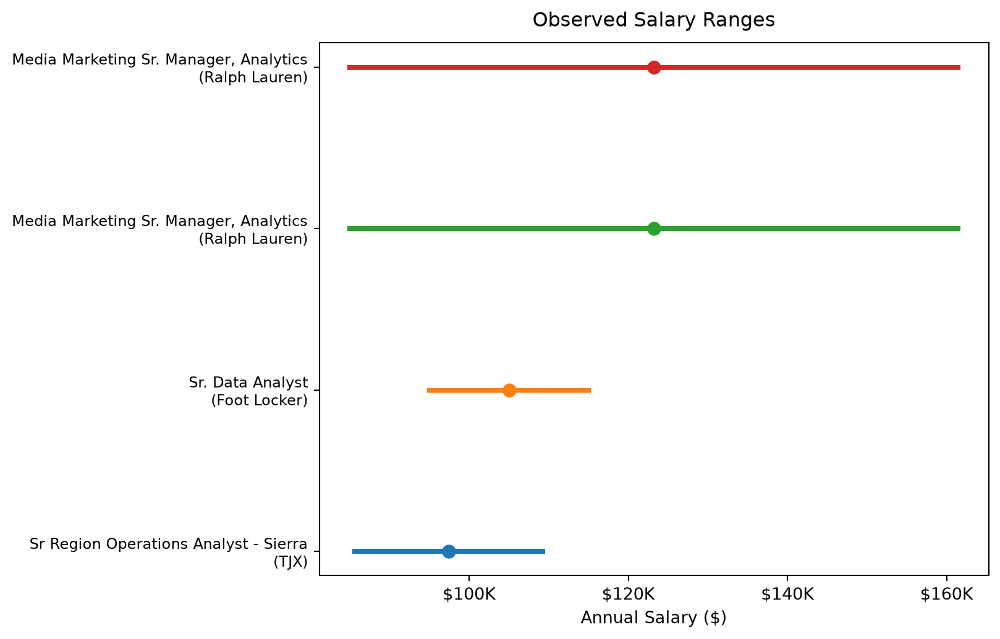
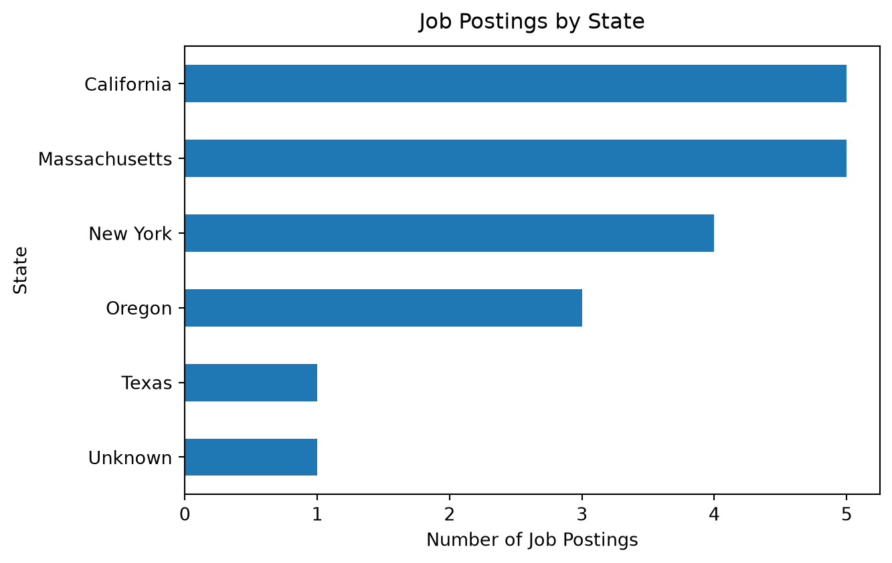
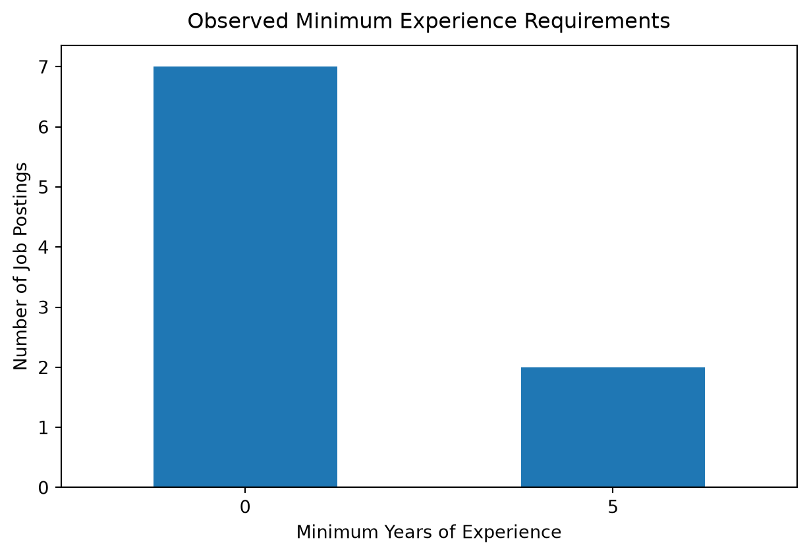
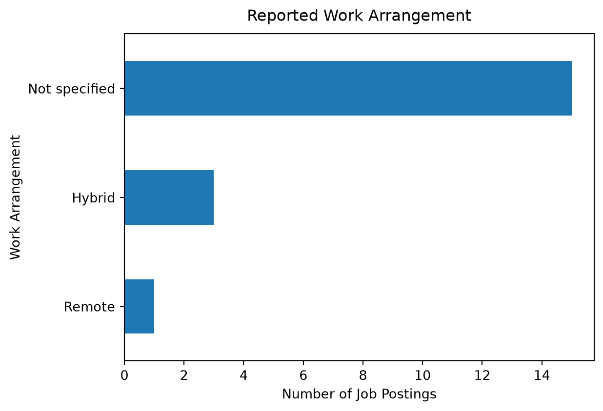
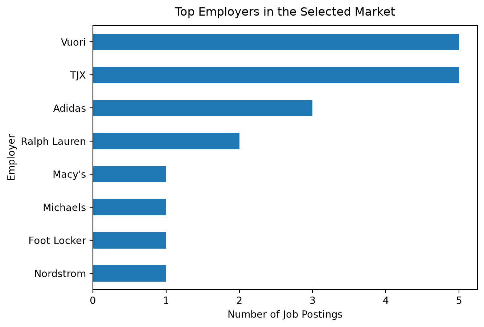

Market Baseline
Market Overview
This page summarizes the baseline characteristics of the selected apparel and fashion analytics job market. The final filtered dataset contains 19 verified job postings based on the team’s selected NAICS 458 scope and an additional exact-match list of known apparel and fashion employers.
Because the market definition is intentionally narrow, the results should be interpreted as a descriptive snapshot of the selected apparel and fashion analytics market rather than as estimates of the broader analytics labor market.
Job Volume by Title or Segment
Job titles provide an initial view of the types of analytics roles represented within the selected apparel and fashion market.
The 19-posting sample contains a mix of analyst, business intelligence, ecommerce analytics, merchandise analytics, and senior analytics roles. Most job titles appear only once, suggesting that the selected market is relatively specialized and fragmented rather than concentrated around a single standardized title. A small number of titles appear more than once, but overall the postings span several analytics-related functions within apparel and fashion retail.
Salary Distribution
Salary information is incomplete in the filtered dataset. Only postings with an originally reported salary range are included in this analysis. Missing salaries that were filled during data preparation are excluded so that the results reflect observed compensation information rather than imputed values.
Postings with observed salary ranges: 4 of 19
Only 4 of the 19 postings contain an observed salary range, so the salary findings should be interpreted cautiously. The available postings show variation in both the lower and upper ends of reported compensation, but the small number of observations is not sufficient to characterize salary levels across the full selected apparel and fashion analytics market. The chart therefore presents only compensation that was explicitly reported in the source postings.
Location Patterns
Geographic information is available for most postings. A small amount of additional standardization is applied below to consolidate obvious differences in state and city labels.

The 19-posting sample is concentrated in a small number of states. California and Massachusetts each account for 5 postings, followed by New York with 4 and Oregon with 3. Texas contributes 1 posting, while 1 record does not contain a usable state value. This geographic concentration appears to reflect the locations of the apparel and fashion employers represented in the filtered sample rather than a geographically representative view of the broader analytics labor market.
Experience Requirement Distribution
Experience requirements are incomplete in the source data. This analysis uses only minimum experience values that were present in the filtered dataset before missing values were filled during data preparation.
Postings with observed minimum experience requirements: 9 of 19
Minimum experience information is available for 9 of the 19 postings. Among those records, 7 postings show a recorded minimum of 0 years and 2 postings show a minimum of 5 years. Because experience information is missing for more than half of the sample, these values should be interpreted as the requirements recorded in the available source data rather than as a complete representation of experience expectations across the selected market.
Remote vs Onsite Patterns
Work-arrangement information is limited in the source data. Rather than assuming that postings with missing remote-status information are onsite roles, records without a reported work arrangement are retained as a separate “Not specified” category.
Postings with an identifiable work arrangement: 4 of 19
An identifiable work arrangement is available for only 4 of the 19 postings. Three postings are classified as hybrid and one as fully remote. The remaining 15 postings either do not report a work arrangement or contain an unknown value. No posting in the available sample is explicitly classified as onsite. Because work-arrangement information is unavailable for most of the sample, these results should not be used to infer the overall prevalence of remote, hybrid, or onsite work in the selected market.
Top Employers
Employer names are standardized below to consolidate obvious duplicate labels before comparing hiring activity within the selected market.
Employers represented in the sample: 8
Hiring activity in the selected sample is concentrated among a small number of apparel and retail employers. Vuori and TJX each account for 5 postings, followed by Adidas with 3 and Ralph Lauren with 2. Nordstrom, Foot Locker, Michaels, and Macy’s each contribute 1 posting. These counts should be interpreted within the context of the small, intentionally filtered dataset rather than as a ranking of overall hiring activity across the apparel and fashion industry.
Baseline Summary
The market baseline provides a descriptive snapshot of analytics-related opportunities within the selected apparel and fashion industry scope. The final dataset contains 19 verified job postings and shows that analytics work appears across several functional areas, including business intelligence, merchandising, ecommerce, finance, operations, and marketing.
Hiring activity is concentrated among a small group of employers and locations. Vuori and TJX each account for 5 postings, while California and Massachusetts each account for 5 postings. New York and Oregon also represent notable hiring locations within the sample.
Several variables have substantial missing information. Only 4 postings contain observed salary ranges, 9 contain recorded minimum experience requirements, and 4 contain an identifiable work arrangement. These limitations are retained explicitly in the analysis rather than treating imputed or missing values as if they were directly reported by employers.
Overall, the findings should be interpreted as a baseline for this narrowly defined apparel and fashion analytics market rather than as estimates of the broader analytics labor market. The results provide a foundation for the later skill-gap and career-evaluation stages of the project.